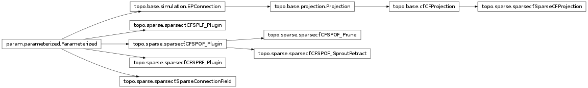

topo.sparse Package¶
sparse Package¶
compile Module¶
sparsecf Module¶

Basic SparseCFProjection with associated sparse CFs and output, response, and learning function. If sparse component cannot be imported, SparseCFProjection will fall back to a basic dense CFProjection.
CFSOF and CFSLF Plugin function allow any single CF output function to be applied to the sparse CFs, but may suffer a serious performance loss. For real work, such functions should be implemented at the Cython or C++ level.